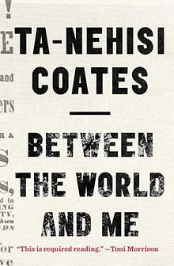

Between The World And Me
Son, Last Sunday the host of a popular news show asked me what it meant to lose my body. The host was broadcasting from Washington, D.C., and I was seated in a remote studio on the Far West Side of Manhattan. A satellite closed the miles between us, but no machinery could close the gap between her world and the world for which I had been summoned to speak. When the host asked me about my body, her face faded from the screen, and was replaced by a scroll of words, written by me earlier that week.vThe host read these words for the audience, and when she finished she turned to the subject of my body, although she did not mention it specifically. But by now I am accustomed to intelligent people asking about the condition of my body without realizing the nature of their request. Specifically, the host wished to know why I felt that white America’s progress, or rather the progress of those Americans who believe that they are white, was built on looting and violence. Hearing this, I felt an old and indistinct sadness well up in me. The answer to this question is the record of the believers themselves. The answer is American history. There is nothing extreme in this statement. Americans deify democracy in a way that allows for a dim awareness that they have, from time to time, stood in defiance of their God. This defiance is not to be much dwelled upon. Democracy is a forgiving God and America’s heresies—torture, theft, enslavement—are specimens of sin, so common among individuals and nations that none can declare themselves immune. In fact, Americans, in a real sense, have never betrayed their God. When Abraham Lincoln declared, in 1863, that the battle of Gettysburg must ensure “that government of the people, by the people, for the people, shall not perish from the earth,” he was not merely being aspirational. At the onset of the Civil War, the United States of America had one of the highest rates of suffrage in the world. The question is not whether Lincoln truly meant “government of the people” but what our country has, throughout its history, taken the political term people to actually mean. In 1863 it did not mean your mother or your grandmother, and it did not mean you and me. As for now, it must be said that the elevation of the belief in being white was not achieved through wine tastings and ice-cream socials, but rather through the pillaging of life, liberty, labor, and land. That Sunday, on that news show...